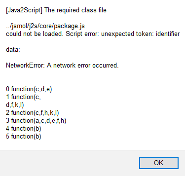

Both remote and local HTML files made using MOPAC were tested using Firefox (other browsers - Internet Explorer, Microsoft Edge, and Chrome were
also tested but none of them worked). For remote HTML files generated by MOPAC,
use the browser Firefox. Simply click on the file and it should open
correctly.
Instructions to allow Firefox to open local HTML files that use Jmol
(1) Open Firefox. Go to the URL about:config (type this in the URL bar at the top of the Firefox window.)
(2) Set the switch "security.fileuri.strict_origin_policy" to "false" - this can be done by clicking on the switch.
|
If you get the message below |
Correct this fault as follows |
|  |
Follow the above "Instructions to allow Firefox to open This message is caused when the switch |
Download the latest Jmol distribution and extract the jsmol.zip file. Extract the contents of jsmol.zip and put them in a location where they can be used. A suitable location would be on the same level as the MOPAC projects being worked on, so if you have a project in the folder .../Users/<yourname>/MOPAC_Projects/Project_1, then unpack the ZIP file at the level .../Users/<yourname>/MOPAC_Projects to form a new folder .../Users/<yourname>/MOPAC_Projects/jsmol.
Download JSmol_examples.zip and extract the contents to a folder at the same level as the folder jsmol. If jsmol is in .../Users/<yourname>/MOPAC_Projects then extract the contents to .../Users/<yourname>/MOPAC_Projects/JSmol_examples
The folder jsmol contains everything that is needed for displaying HTML JSmol
files.
The folder JSmol_examples contains examples of files that can be
generated by MOPAC. These files have been edited to show certain features. New
HTML files made by MOPAC will be much simpler than the ones here.
Before proceeding further, run a test to verify that jsmol is working. To do this, open the folder jsmol and double click on the file Keto-Enol.html. This should open a normal internet window that contains text. If this does not happen, change the settings for files ending in .html to open, use Firefox only. Once the window opens, there will be a short pause until the JSmol window appears, this should contain a picture of a protein. When the JSmol window appears, this test is complete.
Rather than copy files from the various projects into the folder jsmol, it is easier to keep the files in the individual projects and to refer to the files in jsmol. Go into JSmol_examples, and try to open Keto-Enol.html. Most likely it will not open. If that happens, and you see brown and yellow letters flickering in the bottom left corner of the window, then a small change needs to be made to the browser to allow the browser to use the files in jsmol. This change involves changing a security switch from TRUE to FALSE.
The easiest way to open a HTML file made by MOPAC is to double-click the HTML file. Test this method by opening one of the HTML files in the folder JSmol_examples. This should open it with Firefox. If this does not happen, set the default for opening HTML file to Firefox.
An alternative, if Firefox is already open, is to use the File => Open file option in Firefox. To test this, go into JSmol_examples and open any HTML file. This should open a web-page containing text and a graphics window.
Edit a MOPAC data set in one of your projects to add keywords 0SCF HTML, then run that file. This should make two new files, one with the suffix .html, and one with a suffix of the type .pdb, .xyz, or .mgf. Open the .html file. The script files can be edited outside the browser, they cannot be edited inside the browser.
Keyword HTML can be used in subsequent jobs, but each run will create a new HTML file. If the old file was edited, it will be overwritten. The HTML file refers to scripts "Common Script" and "Specific Script" that runs plain-text files, these script files will not be overwritten.
When JSmol is working correctly, a final set of tasks can be carried out. These are: hiding the folder jsmol so that it will not be seen in a directory explorer window, and (in Mac and Linux systems) making a soft link to jsmol.
Right-click on the folder jsmol. Select Properties. Click on Hidden, Click on "Apply changes to this folder only." Click OK.
At the command prompt level, type "chflags hidden /users/<yourname>/MOPAC_Projects/jsmol"
To undo this, at the command prompt level, type "chflags nohidden /users/<yourname>/MOPAC_Projects/jsmol"
Do not type the quotation marks.
Mac: If you want the folder jsmol to be used by different projects at different levels, and don't want to copy the folder (it gets messy fast) at each level go up one folder and make a soft link to jsmol using. e.g., "ln -s ../jsmol jsmol" or "ln -s /users/<yourname>/jsmol jsmol" Unfortunately, there does not appear to be any simple way to hide the alias in Finder.
Linux: Should be like Mac
Windows: Use mklink